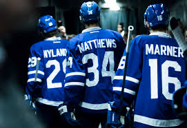
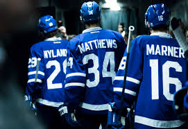
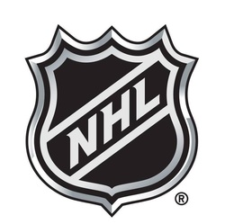

ABOUT ME
 

My name is Adam Cora. Today is December 3rd, 2017 and i have decided to relauch this group just a couuple of days ago. I am currently a 3rd year Sport Management Student at Brock University in St. Catharine’s, Ontario, Canada. I am a massive fan of the game of hockey and my favourite team is the Toronto Maple Leafs. About 5 years ago I help ran a Facebook page called All Thing Leafs which was all about covering all things Toronto Maple Leafs related. After going into later years of high school and university it became much harder to run the site on my own, so I ended up trying to find others to post information but each person that came ended up stopping within a month or two. Due to me not having time and no one to cover my spot the page ended up dying. I regret stopping the page as it was always a fun time when running it and I ended up with nearly 3K likes. If I kept going with the page I can’t even imagine where it would be now. After all these years I have felt that I am up to running the site again but deciding to also make a website as well as continuing the Facebook group. The Facebook group hasn’t had much activity over the last few years, so it will most likely be a struggle to get the site active once again. Hopefully there are still some of you out there that will be back from the beginning of this page. Thank You, Adam Cora 